마케터 일 순서별 AI 도구 9개
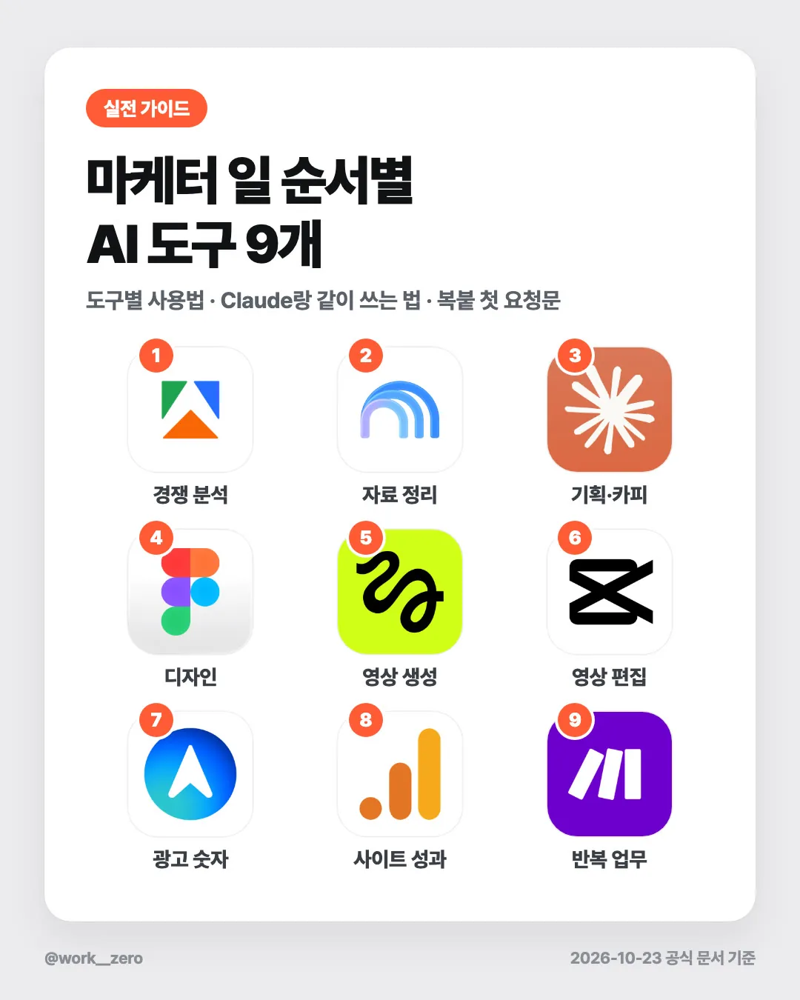
30초 요약
- 마케터 일을 조사 → 기획 → 제작 → 측정 → 자동화 순서로 나누고, 단계마다 도구 하나씩 골랐어요. 9개를 한 번에 깔 필요는 없어요.
- 도구마다 처음 쓰는 3단계, Claude·ChatGPT와 같이 쓰는 법, 복사해서 바로 쓰는 요청문을 넣었어요.
- Claude와 같이 쓰는 방법은 두 가지예요. 공식 커넥터로 직접 연결(Apify·Figma·Make·Higgsfield·Meta 광고 관리자)하거나, 결과를 내보내서 붙여 넣기(Gemini Notebook·CapCut·GA4)예요. 도구마다 어느 쪽인지 정직하게 나눠 적었어요.
- 처음이라면 12절의 "이 3개부터" 경로 하나만 따라 하세요.
| 단계 | 도구 | 무료로 어디까지 | Claude와 연결 | 처음 쓰는 데 걸리는 시간(어림) |
|---|---|---|---|---|
| 1. 경쟁 분석 | Apify | 매달 약 6,600원어치 사용량, 카드 없이 가입 | 직접 연결(공식 커넥터) | 15분 |
| 2. 자료 정리 | Gemini Notebook(옛 NotebookLM) | 노트북 100개, 노트북당 자료 50개 | 결과 붙여 넣기 | 10분 |
| 3. 기획·카피 | Claude | 채팅·파일·커넥터까지 무료 | (중심 도구) | 5분 |
| 4. 디자인 | Figma | 파일 3개, AI 크레딧 월 500 | 직접 연결(공식 커넥터) | 20분 |
| 5. 영상 생성 | Higgsfield | 크레딧 0, 워터마크, 상업적 이용 불가 | 직접 연결(주소 직접 추가, 유료 구독) | 15분 |
| 6. 영상 편집 | CapCut | 기본 편집·무료 템플릿 | 결과 붙여 넣기 | 20분 |
| 7. 광고 숫자 | Meta 광고 관리자 | 별도 사용료 안내 없음(비용은 광고비) | 직접 연결(주소 직접 추가, 오픈 베타) | 15분 |
| 8. 사이트 성과 | GA4 | 표준 버전 무료 | 결과 붙여 넣기(CSV) 추천 | 30분 |
| 9. 반복 업무 | Make | 월 1,000크레딧, 최소 15분 간격 | 직접 연결(공식 커넥터) | 20분 |
걸리는 시간은 가입부터 첫 결과까지 3단계를 따라 했을 때의 어림값이에요. 계정 준비 상태에 따라 달라요. 무료 범위·연결 방식은 2026년 10월 23일 공식 문서 기준이에요.
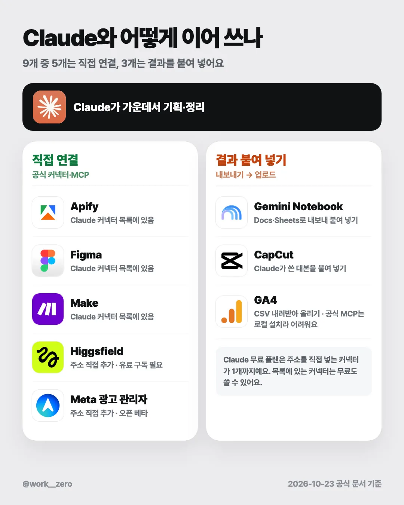
1. 업무 순서 지도
도구를 기능으로 고르면 비슷한 게 계속 늘어나요. 이 가이드는 마케터가 일하는 순서대로 한 단계에 하나씩만 골랐어요.
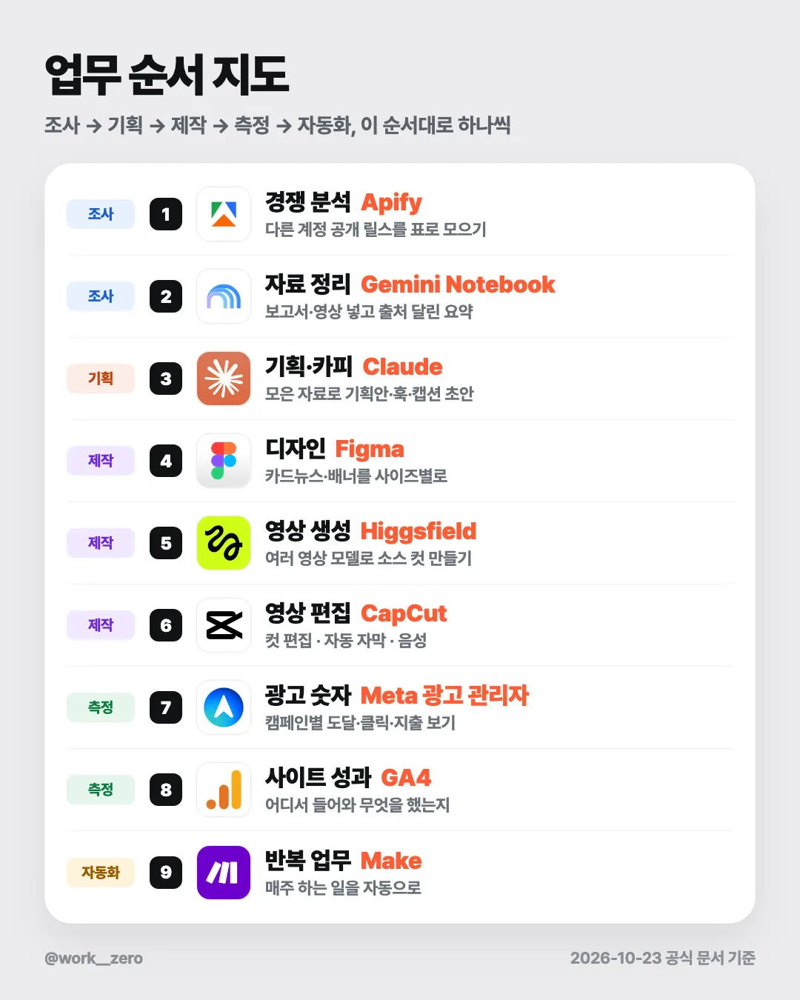
- 조사: 다른 계정에서 반응이 컸던 콘텐츠를 모으고(Apify), 보고서·영상 같은 자료를 요약해요(Gemini Notebook).
- 기획: 모은 자료로 기획안·훅·캡션 초안을 받아요(Claude).
- 제작: 카드뉴스(Figma), 영상 소스(Higgsfield), 편집·자막(CapCut).
- 측정: 광고 숫자(Meta 광고 관리자), 사이트 유입(GA4).
- 자동화: 매주 반복되는 일을 자동으로 돌려요(Make).
Claude는 이 흐름의 가운데에 있어요. 조사 결과를 받아 기획으로 넘기고, 측정 숫자를 받아 다음 주 기획으로 다시 넘겨요.
2. 공통 준비 — Claude에 도구를 붙이는 두 가지 방법
방법 A. 커넥터 목록에서 추가(가장 쉬움)
- Claude 왼쪽 메뉴 Customize → Connectors에서
+를 누르고 도구 이름을 검색해 추가해요. 처음 연결할 때 그 도구의 로그인·승인 창이 열려요. - 무료 플랜을 포함해 모든 사용자가 쓸 수 있어요(웹·데스크톱·모바일, 모바일 설치는 베타).
- 이 가이드에서는 Apify, Figma, Make가 이 방법이에요.
방법 B. 주소를 직접 넣는 사용자 지정 커넥터
- Customize → Connectors → + Add → Add custom connector에서 이름과 연결 주소를 넣어요.
- Free·Pro·Max·Team·Enterprise 모두 되지만, 무료 플랜은 1개까지예요.
- 이 가이드에서는 Higgsfield, Meta 광고 관리자가 이 방법이에요.
- Team·Enterprise 플랜은 관리자(Owner)가 조직 설정에서 먼저 추가해야 해요.
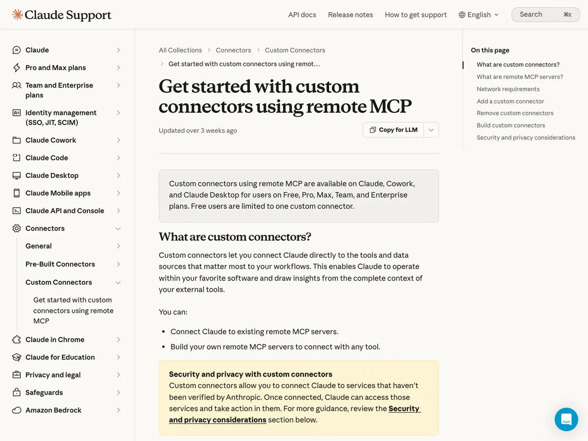
ChatGPT는요? OpenAI 공식 도움말 기준으로, 주소를 직접 넣는 MCP 연결의 전체 기능(읽기·쓰기)은 Business·Enterprise/Edu 플랜(웹)이 대상이고(Business는 관리자·소유자만 만들 수 있어요), Pro는 읽기·조회 권한만 연결돼요. Plus·Free에서 되는지는 공식 문서에서 확인되지 않았어요. 그래서 이 가이드는 Claude를 기준으로 쓰고, ChatGPT는 도구마다 공식 문서에 나온 방법만 적었어요.
연결하기 전에 사용자 지정 커넥터는 Anthropic이 검증하지 않은 서비스도 붙일 수 있어요. 이 가이드에 적은 주소처럼 도구 회사의 공식 문서에 나온 주소만 넣으세요.
3. 경쟁 분석 — Apify
이 업무에 왜 Apify인가
다른 계정의 공개 릴스·게시물을 조회수·좋아요·댓글 수·캡션·해시태그까지 표(CSV·엑셀)로 뽑아 줘요. Apify Store에서 인스타용 수집기(Actor)를 골라 계정 주소만 넣고 돌리면 돼요. 인스타 계정 연결 없이, 로그인하지 않은 방문자에게 보이는 공개 수치를 모아요.
처음 쓰는 3단계
apify.com에서 무료로 가입해요. 카드 없이 가입되고, 매달 약 6,600원어치 사용량이 들어 있어요.- Apify Store에서 Instagram Reel Scraper를 열고, 참고할 계정 사용자명이나 릴스 주소를 넣어 실행해요.
- 실행 결과 데이터셋에서 Export → CSV(또는 Excel)를 골라 내려받아요. 필요한 칸만 Select fields로 고를 수 있어요.
Claude·ChatGPT와 같이 쓰는 법 — 직접 연결(공식 커넥터)
- Claude: 2절 방법 A로 커넥터 목록에서 "Apify"를 검색해 추가해요(Apify가 만든 Anthropic 검증 커넥터). 직접 넣으려면 연결 주소
https://mcp.apify.com를 쓰고, 처음 연결할 때 Apify 로그인으로 승인해요. - ChatGPT: Apify 공식 문서 기준으로 개발자 모드를 켜고 Settings → Apps & Connectors → Create에서 MCP 주소
https://mcp.apify.com, 인증 OAuth로 만들어요. 플랜 조건은 2절과 같아요(Plus·Free는 확인되지 않음). - 연결하면 수집부터 정리까지 채팅 한 번으로 시킬 수 있어요. 연결이 어렵다면 3단계에서 받은 CSV를 그대로 올려도 돼요.
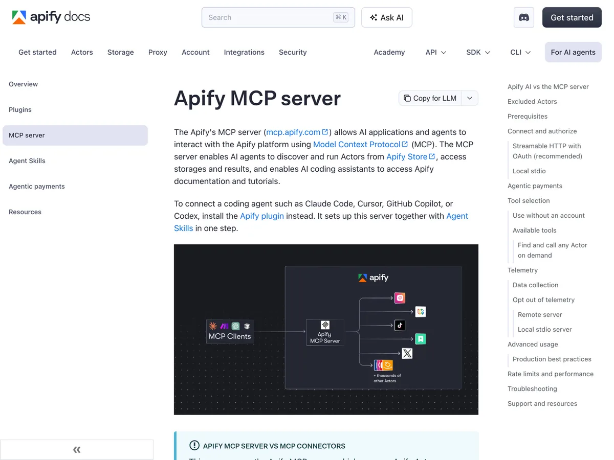
바로 쓰는 요청문
{ } 안만 내 상황으로 바꾸세요. ① 다른 계정 릴스 모아서 정리
Apify의 Instagram Reel Scraper로 {@계정이름} 계정의 최근 릴스 20개를 가져와 줘.
조회수가 높은 순으로 표 하나로 정리해 줘: 게시일 · 조회수 · 좋아요 · 댓글 수 · 캡션 첫 줄.
결과 개수는 20개로 제한해서 사용량을 아껴 줘.② 반응이 컸던 릴스의 공통점
첨부한 CSV는 {업종} 분야 계정 {3}곳의 최근 릴스 데이터야.
조회수 상위 10개와 하위 10개를 나눠서, 캡션 첫 문장(훅) 유형 · 영상 길이 · 해시태그 수가 어떻게 다른지 비교해 줘.
데이터에 없는 내용은 추측하지 말고 "데이터 없음"이라고 적어 줘.③ 우리 계정에 맞게 기획 아이디어로
위에서 정리한 공통점을 참고해서, {우리 브랜드/상품}에 맞는 릴스 주제 5개를 제안해 줘.
다른 계정의 문장을 그대로 쓰지 말고 구조만 참고해. 주제마다 첫 문장 예시 1개와 근거가 된 데이터 행을 같이 적어 줘.대안 도구
Bright Data, PhantomBuster
주의점
알아 두세요
- 공개 데이터만 모아요. 비공개 계정은 수집되지 않아요.
- 공개 데이터도 개인정보일 수 있어서 Apify는 "정당한 이유가 있을 때만 수집하라"고 안내해요. 모은 데이터를 어떻게 쓰는지는 전적으로 사용자 책임이에요(Apify 이용약관 5.8조).
- 무료 사용량을 다 쓰면 다음 달까지 멈춰요. 남은 크레딧은 이월되지 않아요.
- 무료 플랜 기준 릴스 1,000개를 모으는 데 약 3,400원어치가 들어서, 무료 사용량으로 약 2,000개를 모을 수 있어요(Apify 페이지 표기 기준). 자막·영상 다운로드는 따로 과금돼요.
- 공유 수는 유료 사용자만 보여요. 내려받은 영상 주소는 3일 뒤 만료돼요.
- 유료(Starter)는 월 약 2.5만 원부터예요.
※ 공식 가격은 달러 결제, 환율·세금에 따라 달라요(2026-10-23 기준).
4. 자료 정리 — Gemini Notebook(옛 NotebookLM)
이름이 바뀌었어요 Google은 2026년 7월 16일 NotebookLM의 이름을 Gemini Notebook으로 바꿨어요. 같은 단독 제품이고, 기존 노트북과 공유 링크는 그대로 열려요. 아직 옛 이름으로 된 도움말이 섞여 있어요. Gemini 앱 안의 "Notebooks in Gemini"와는 다른 제품이에요.
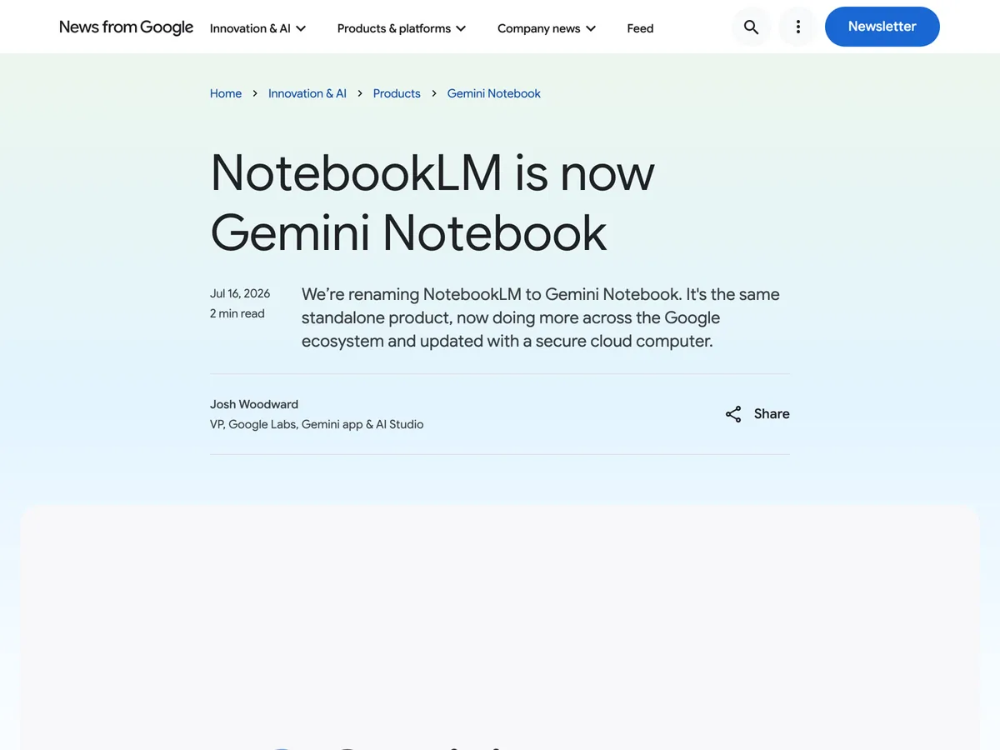
이 업무에 왜 Gemini Notebook인가
보고서·PDF·웹페이지·유튜브 영상·회의 녹음을 한 노트북에 넣으면, 그 자료 안에서만 답하고 출처 위치를 인용으로 달아 줘요. 경쟁사 자료나 업계 리포트를 여러 개 읽어야 할 때 쓰기 좋아요. 요약 오디오·영상, 보고서, 데이터 표도 만들어 줘요. 넣을 수 있는 자료: PDF, 웹 주소, 자막 있는 공개 유튜브, 오디오(MP3·WAV), Google 문서·슬라이드·시트, Word·PPT·텍스트·CSV, 이미지 등.
처음 쓰는 3단계
- 개인 Google 계정으로
notebook.google.com에 로그인해요. 회사·학교 계정은 관리자가 켜 줘야 해요. - Create new notebook → Upload a source에서 보고서 PDF, 기사 주소, 유튜브 링크를 넣어요.
- 채팅에 질문해서 인용 달린 답을 받아요. 필요하면 보고서·데이터 표를 만들어 Google Docs·Sheets로 내보내요.
Claude·ChatGPT와 같이 쓰는 법 — 결과 붙여 넣기
- 공식 커넥터·공식 MCP는 확인되지 않았어요. 깃허브에 개인이 만든 연결 도구가 있지만, 구글 로그인 정보를 넘기는 방식이라 권하지 않아요.
- 대신 보고서는 Google Docs로, 데이터 표는 Google Sheets로 내보낸 뒤 Claude에 파일로 올리거나 텍스트를 붙여 넣어요. Claude의 Google Drive 커넥터를 쓰고 있다면 그 파일을 바로 불러와도 돼요.
- ChatGPT도 같은 방법이에요. 내보낸 파일을 올리거나 붙여 넣어요.
바로 쓰는 요청문
① Gemini Notebook에서 — 출처 달린 요약
이 자료들에서 {타깃 고객}이 공통으로 말하는 불만 5개를 정리해 줘.
불만마다 출처 문장을 인용으로 달고, 자료에 없는 내용은 넣지 마.② Gemini Notebook에서 — 표로 뽑기
자료에 나온 경쟁 서비스를 표로 정리해 줘: 서비스 이름 · 가격 · 내세우는 장점 · 고객 불만.
자료에 없는 칸은 비워 둬.③ Claude에서 — 내보낸 요약으로 기획하기
첨부한 문서는 Gemini Notebook에서 출처를 달아 정리한 {타깃 고객} 불만 요약이야.
이 불만을 해결하는 콘텐츠 주제 5개를 제안해 줘. 주제마다 어떤 불만(인용)에서 나왔는지 같이 적어 줘.대안 도구
Claude 프로젝트(Projects), ChatGPT 프로젝트(Projects)
주의점
알아 두세요
- 무료: 노트북 100개, 노트북당 자료 50개, 자료 하나당 50만 단어 또는 200MB까지예요. 한도는 바뀔 수 있다고 적혀 있어요.
- 개인 계정 콘텐츠는 AI 학습에 직접 쓰지 않지만, 좋아요·싫어요 피드백을 보내면 관련 질문·업로드·답변이 수집되고 사람이 볼 수 있어요(최대 3년 보관). 고객 개인정보나 공개 전 자료는 개인 계정에 올리지 마세요.
- 회사·학교(Workspace) 계정은 사람이 검토하지 않고 학습에도 쓰지 않아요.
- 내보낸 Docs·Sheets를 고쳐도 노트북에는 반영되지 않아요.
- 더 많이 쓰려면 Google AI Plus 월 11,900원부터예요(노트북 200개·자료 100개).
5. 기획·카피 — Claude
이 업무에 왜 Claude인가
기획안·훅·캡션 초안을 쓰고 다듬는 대화형 AI예요. 이 가이드에서는 가운데 도구예요. 커넥터로 Apify·Figma·Make 같은 도구를 붙이면, 수집한 데이터로 바로 기획까지 이어 갈 수 있어요. 무료 플랜에서도 웹 검색, 파일 만들기, 대화 간 기억, 커넥터를 쓸 수 있어요.
처음 쓰는 3단계
claude.ai에서 무료로 가입해요.- 새 채팅에 브랜드 소개·타깃·지난 콘텐츠 반응을 붙여 넣거나, Apify CSV·Gemini Notebook 요약 파일을 올려요. 필요하면 Customize → Connectors에서 Apify·Google Drive를 연결해요.
- 아래 요청문으로 초안을 받고, 마음에 안 드는 부분을 이어서 고쳐 달라고 해요.
Claude·ChatGPT와 같이 쓰는 법
- Claude 자체라 연결할 것은 없어요. 2절의 두 방법으로 다른 도구를 붙이는 쪽이에요.
- ChatGPT 안에서 Claude를 부르는 공식 연결은 없어요. 같은 요청문을 양쪽에 넣고 결과를 비교하거나, 한쪽 초안을 다른 쪽에 붙여 넣어 검토받는 식으로 써요.
바로 쓰는 요청문
① 릴스 훅·캡션 초안
{우리 브랜드/상품}을 {타깃 고객}에게 알리는 릴스를 만들 거야. 첨부한 자료를 바탕으로
- 첫 문장(훅) 5개: 1.5초 안에 읽히는 길이
- 훅마다 캡션 초안 3줄
- 각 훅의 근거가 된 자료 위치
를 표로 줘. 과장된 표현("무조건", "역대급")은 쓰지 마.② 기획안 한 장
다음 주에 올릴 콘텐츠 기획안을 한 장으로 써 줘.
목표: {팔로워 늘리기 / 문의 받기}. 채널: {인스타 릴스}. 참고 자료: 첨부 파일.
항목: 한 줄 메시지 · 타깃이 겪는 문제 · 구성(장면 5개) · 행동 유도 문구 · 확인이 필요한 사실.③ 고쳐 쓰기
아래 초안을 고쳐 줘. 번역체 문장, 같은 말 반복, 처음 보는 사람이 모를 단어를 찾아서 표시하고 고친 문장을 옆에 적어 줘.
{초안 붙여 넣기}대안 도구
ChatGPT, Gemini
주의점
알아 두세요
- 무료는 5시간 단위로 사용량이 다시 채워져요(고정 메시지 수 없음). 유료는 주간 한도가 따로 있어요.
- 개인 플랜(Free·Pro·Max)은 채팅을 모델 개선에 쓸지 직접 골라요. 설정 → 개인정보의 "Model Improvement"에서 바꿀 수 있고, 시크릿(Incognito) 채팅은 켜져 있어도 학습에 쓰지 않아요.
- Pro는 월 약 2.7만 원(연 결제 시 월 약 2.3만 원)이에요. 무료의 5배 이상을 쓸 수 있어요.
※ 공식 가격은 달러 결제, 환율·세금에 따라 달라요(2026-10-23 기준).
6. 디자인 — Figma
이 업무에 왜 Figma인가
카드뉴스·배너·SNS 이미지를 템플릿으로 만들고 사이즈별로 뽑는 디자인 도구예요. 소셜 이미지용 Figma Buzz에 인스타그램 등 플랫폼별 사이즈가 들어 있고, 이미지는 Unsplash·직접 업로드·AI 생성으로 넣어요. Buzz는 오픈 베타라 지금은 모든 플랜에서 쓸 수 있어요(영상 가져오기·내보내기만 유료).
처음 쓰는 3단계
figma.com에서 무료(Starter)로 가입해요.- Figma Buzz 파일을 새로 만들고 인스타그램 사이즈나 템플릿을 골라요.
- 문구를 바꾸고 이미지를 넣은 뒤 내보내요.
Claude·ChatGPT와 같이 쓰는 법 — 직접 연결(공식 커넥터)
- Claude: 2절 방법 A로 커넥터 목록에서 "Figma"를 추가하고 Figma 계정으로 승인해요(Figma가 만든 검증 커넥터, 연결 주소
https://mcp.figma.com/mcp). - 무엇이 되는지는 공식 문서끼리 범위가 달라요. 커넥터 목록 페이지는 "Figma 파일의 디자인 맥락을 읽고 코드를 만들고, FigJam 다이어그램을 만든다"고 하고, Figma 도움말은 "Claude 연동은 FigJam 다이어그램 생성만 지원한다"고 해요. 캔버스에 직접 쓰는 기능은 개발자 문서에 베타로 나와 있어요.
- 그래서 "Claude가 카드뉴스를 Figma에 그려 준다"고 기대하지 마세요. 지금 확실한 쓰임은 ① Claude가 카드뉴스 문구·구성을 쓰고 ② 내가 Figma에 넣고 ③ 업무 흐름도는 FigJam 다이어그램으로 받는 정도예요.
- ChatGPT: ChatGPT 안에 공식 Figma 앱이 있어요(FigJam·Figma Slides만 지원, EU에서는 아직 안 됨). 프로필 → Apps & connectors → Figma → Connect로 연결해요.
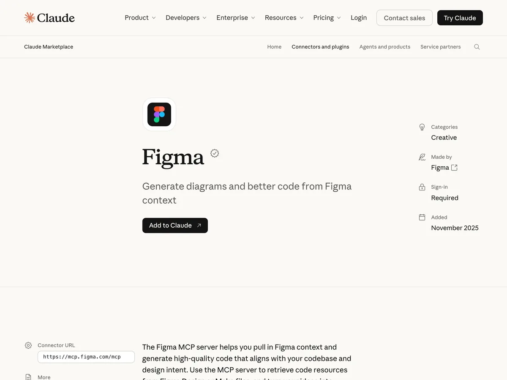
바로 쓰는 요청문
① Claude에서 — 카드뉴스 문구와 구성
{주제}로 인스타 카드뉴스 6장을 기획해 줘. 1080×1350 기준.
장마다: 큰 제목(15자 이내) · 본문(40자 이내) · 넣을 이미지 메모.
1장은 저장하고 싶어지는 표지, 6장은 행동 유도 문구로 끝내 줘.② Claude + Figma 커넥터 — 흐름도
Figma 커넥터로 FigJam에 다이어그램을 만들어 줘.
내용: 우리 팀 콘텐츠 제작 흐름 — 소재 조사 → 기획 → 디자인 → 편집 → 검수 → 발행. 단계마다 담당자 칸을 비워 둬.③ Claude에서 — 사이즈별 문구 줄이기
아래 카드뉴스 문구를 {스토리 1080×1920 / 피드 1080×1350} 두 가지로 나눠 줘. 스토리용은 한 장에 한 문장만.
{문구 붙여 넣기}대안 도구
Canva, Adobe Express
주의점
알아 두세요
- 무료(Starter)는 파일 3개까지라 카드뉴스를 매주 만들면 금방 차요. AI 크레딧은 하루 150, 월 500까지예요.
- 무료 플랜에서 Claude가 Figma 데이터를 읽는 호출은 월 20회까지예요. 사실상 맛보기예요.
- Buzz는 베타라 정식 출시 뒤 AI 기능이 유료가 될 수 있다고 안내돼 있어요.
- 게시 전에 이미지·폰트 등 들어간 콘텐츠의 권리를 갖고 있는지 확인하라고 안내해요. AI로 만든 이미지의 상업적 이용 조건은 공식 문서에서 따로 확인하지 못했어요.
- 유료(Professional 풀 시트)는 월 약 2.1만 원(연 결제)·월 약 2.7만 원(월 결제)이에요.
※ 공식 가격은 달러 결제, 환율·세금에 따라 달라요(2026-10-23 기준).
7. 영상 생성 — Higgsfield
이 업무에 왜 Higgsfield인가
Kling·Seedance·Sora·Veo 같은 여러 회사의 영상 모델을 계정 하나와 크레딧으로 골라 쓰는 AI 영상·이미지 생성 서비스예요. 광고용(Ads Studio)·UGC·립싱크 기능도 있어요. 촬영 없이 제품 컷이나 배경 영상 소스가 필요할 때 써요.
처음 쓰는 3단계
higgsfield.ai에 가입해요. 무료로도 만들 수는 있지만 크레딧이 0이고 워터마크가 붙고 상업적 이용이 안 돼요. 실무용이면 Starter(월 약 2.5만 원) 이상을 구독해요.- 영상 메뉴(또는 Ads Studio)에서 모델을 골라요. 예: Kling 3.0 720p 8초 1회는 약 14크레딧이에요. 제품 사진이나 참고 이미지를 올리고 프롬프트를 써요.
- 만든 영상을 확인하고 내려받아요. 남은 크레딧도 같이 확인해요.
Claude·ChatGPT와 같이 쓰는 법 — 직접 연결(주소 직접 추가)
- Claude: Claude 커넥터 목록에는 없어서 2절 방법 B로 추가해요. 이름
Higgsfield, 주소https://mcp.higgsfield.ai/mcp→ 연결을 누르면 Higgsfield 로그인·승인 창이 열려요. API 키는 필요 없어요. - ChatGPT: Higgsfield 도움말 기준으로 ChatGPT 플러그인 목록에서 Higgsfield를 찾아 추가해요(주소 입력 없음). ChatGPT에서는 오디오 생성이 안 돼요. OpenAI 쪽 문서로는 따로 확인하지 못했어요.
- 두 쪽 모두 Higgsfield 유료 구독이 필요하고, 채팅으로 만들 때마다 크레딧이 빠져요.
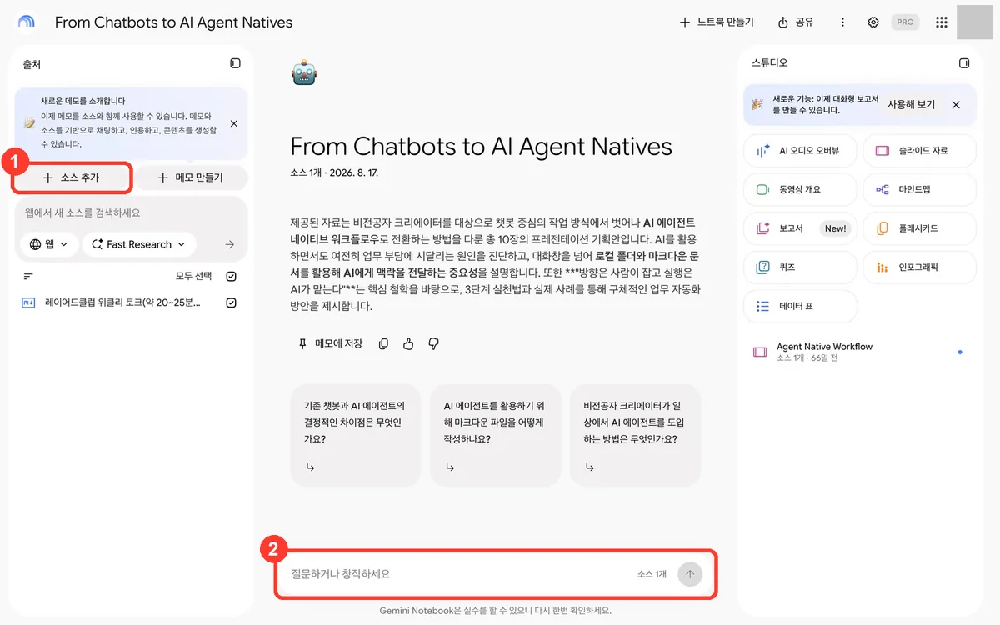
바로 쓰는 요청문
① Claude에서 — 영상 프롬프트 만들기
{제품}을 보여 주는 8초짜리 세로 영상 소스를 만들 거야.
영상 생성 모델에 넣을 영어 프롬프트 3개를 써 줘: 카메라 움직임 · 조명 · 배경 · 제품 위치를 구체적으로.
사람 얼굴과 다른 브랜드 로고는 나오지 않게 해 줘.② Claude + Higgsfield 커넥터 — 바로 만들기
Higgsfield로 위 프롬프트 1번을 Kling 3.0 720p, 8초, 세로(9:16)로 한 번만 만들어 줘.
만들기 전에 예상 크레딧과 지금 남은 크레딧을 먼저 알려 주고, 내가 확인하면 진행해.③ Claude에서 — 장면 목록
{제품} 릴스 15초를 3컷으로 나눠 줘. 컷마다 화면 설명 · 자막 한 줄 · 영상 생성용 프롬프트를 표로.대안 도구
Runway, Kling AI
주의점
알아 두세요
- 무료 계정 결과물에는 모두 워터마크가 붙고, 상업적 이용이 안 돼요. 나중에 구독해도 이미 만든 결과물의 워터마크는 지워지지 않아서 다시 만들어야 해요.
- Starter에서는 Sora 2, Veo 3.x, Kling 3.0 1080p 이상을 쓸 수 없어요(Plus 이상).
- 크레딧은 모델·해상도·길이에 따라 크게 달라요. Starter 270크레딧은 Seedance 2.0 Fast 영상 약 15개 분량이에요. 개인 구독 크레딧은 이월되지 않아요.
- 요금제의 "무제한" 생성은 웹에서만 되고, Claude·ChatGPT로 만들 때는 항상 크레딧이 빠져요.
- 가격에 부가세·현지 세금이 빠져 있고, 프로모션 문구가 자주 바뀌어요. Plus는 월 약 7.8만 원(연 결제 시 월 약 6.2만 원)이에요.
※ 공식 가격은 달러 결제, 환율·세금에 따라 달라요(2026-10-23 기준).
8. 영상 편집 — CapCut
이 업무에 왜 CapCut인가
릴스·쇼츠를 자르고 붙이고, 자동 자막과 텍스트 음성 변환으로 자막과 내레이션을 빠르게 입혀요(데스크톱·웹). 두 기능 모두 공식 도구 페이지에서 "무료"로 소개하고, 음성은 200개 넘게 있어요.
처음 쓰는 3단계
- CapCut 데스크톱을 무료로 내려받거나 CapCut 웹에 로그인해요.
- 새 프로젝트에 영상을 올리고 텍스트 → 자동 캡션(웹은 캡션 → 자동 캡션)으로 자막을 만든 뒤 오탈자를 고쳐요. 내레이션이 필요하면 텍스트를 넣고 텍스트 음성 변환에서 음성을 골라 만들어요.
- 내보내기에서 해상도를 정해 내보내요. 자막만 SRT 파일로 따로 내보낼 수도 있어요.
Claude·ChatGPT와 같이 쓰는 법 — 결과 붙여 넣기
- 공식 커넥터·공식 MCP는 없어요. 'capcut-mcp' 같은 이름의 도구는 모두 비공식이에요. ChatGPT 공식 연동도 확인되지 않았어요.
- 이렇게 이어 써요: ① Claude가 대본과 자막 문장을 써요 → ② CapCut 텍스트 → 텍스트 추가에 붙여 넣고 텍스트 음성 변환으로 음성을 만들어요 → ③ 촬영본이면 자동 캡션을 만든 뒤 Claude가 쓴 문장과 맞춰 고쳐요.
바로 쓰는 요청문
① Claude에서 — 릴스 대본(음성용)
{주제}로 25초 릴스 대본을 써 줘. 문장마다 한 줄, 한 문장은 3초 안에 읽히는 길이.
영어 도구 이름은 한글 발음으로 따로 적어 줘(음성 변환용). 첫 문장은 1.5초 안에 끝나게.② Claude에서 — 자동 자막 교정
아래는 CapCut 자동 캡션으로 만든 자막이야. 원래 대본과 비교해서 틀린 단어를 찾아 표로 줘: 시간 · 자막 · 고칠 말.
[대본]
{대본 붙여 넣기}
[자막]
{자막 붙여 넣기}③ Claude에서 — 자막 줄 나누기
아래 대본을 화면 자막용으로 나눠 줘. 한 줄 14자 이내, 단어 중간에서 끊지 않기.
{대본 붙여 넣기}대안 도구
Vrew, Adobe Premiere Pro
주의점 — 음악·소재 상업적 이용
CapCut 음악을 인스타 릴스에 그대로 쓰지 마세요
- 일반 사운드(Sounds)는 개인·비상업용이에요. 브랜드·비즈니스 홍보에 쓰면 안 돼요.
- 상업용 사운드(Commercial Sounds)도 CapCut·TikTok·TikTok for Business 안에서만 허용돼요. 인스타 릴스 등 다른 곳에 쓰려면 권리자에게 따로 허가를 받아야 해요.
- 템플릿·소재도 "Commercial Use" 표시가 붙은 것만 상업용으로 쓸 수 있어요. 상업용과 비상업 소재를 섞으면 결과물 전체가 비상업 용도로만 허용돼요.
- 다른 사용자가 만든 템플릿은 CapCut 라이선스 대상이 아니에요.
- 텍스트 음성 변환 음성은 공식 도구 페이지에서 광고·브랜드 홍보 등 상업적 목적에 쓸 수 있다고 안내해요(이용약관은 따라야 해요).
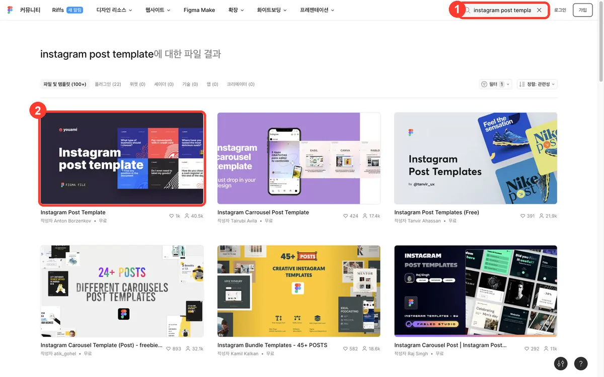
- 유료(Pro)는 월 25,000원, 연 198,000원이에요(한국 가격 페이지, 로그인하면 최종 가격이 달라질 수 있어요). AI 기능은 크레딧을 써요(Pro 월 700).
- 무료 내보내기에 워터마크가 붙는지는 공식 문서로 확인하지 못했어요.
9. 광고 숫자 — Meta 광고 관리자
이 절은 어디서 무엇을 보는지 안내하는 정보예요. 광고를 얼마에 어떻게 집행하라는 내용은 담지 않았어요.
이 업무에 왜 Meta 광고 관리자인가
Facebook·Instagram 광고를 만들고, 캠페인·광고 세트·광고별로 도달·클릭·지출 같은 성과를 표와 차트로 확인하는 Meta 공식 도구예요. 성과를 볼 때는 "열(지표)을 골라 표로 보고, 차트로 쪼개 보고, 보고서로 내보내는 곳"이라고 생각하면 돼요.
처음 쓰는 3단계 — 어디서 무엇을 보나
- 볼 지표 고르기: 광고 관리자에서 캠페인·광고 세트·광고 중 하나를 누르고 → 열 드롭다운 → 열 맞춤 설정 → 표시할 지표를 골라요(성과·참여·전환·설정 카테고리). 다시 쓰려면 열 기본 설정으로 저장을 체크하고 적용해요.
- 차트로 쪼개 보기: 캠페인 이름 위에 커서를 올리면 나오는 차트 보기를 눌러요. 성과(일별 클릭·도달·비용), 인구 통계학적 특성(연령대·성별), 플랫폼(Facebook·Instagram 등 노출 위치별)을 볼 수 있어요.
- 보고서로 내보내기: 보고서 → 맞춤 보고서 만들기에서 지표를 골라 저장한 뒤 내보내기(.xlsx/.csv)해요. 주 1회 이메일로 받는 예약 보고서도 만들 수 있어요.
Claude·ChatGPT와 같이 쓰는 법 — 직접 연결(주소 직접 추가, 오픈 베타)
- Meta는 2026년 4월 29일 Meta 광고 AI 커넥터(광고 MCP 서버)를 오픈 베타로 냈어요. Meta 도움말이 지원 AI로 ChatGPT, Claude, Claude Code, Perplexity를 적어 두었어요. 연결 주소는
https://mcp.facebook.com/ads예요. - Claude: Claude 커넥터 목록에는 Meta 공식 커넥터가 없어서 2절 방법 B로 이 주소를 넣고 Facebook 로그인으로 승인해요.
- ChatGPT: 사용자 지정 MCP 서버 추가에 같은 주소를 넣고 OAuth로 인증해요. 플랜 조건은 2절과 같아요(Plus·Free는 확인되지 않음).
- 도움말 기준으로 성과 보고서 조회, 캠페인 만들기·수정, 맞춤 타겟 등을 할 수 있고, 대신 하는 모든 작업에는 내 승인이 필요해요. 에이전트로 만든 광고는 게재 설정 전까지 일시 중단 상태예요.
- 연결이 어렵다면 3단계에서 내보낸 .csv 파일을 Claude에 올려도 돼요.
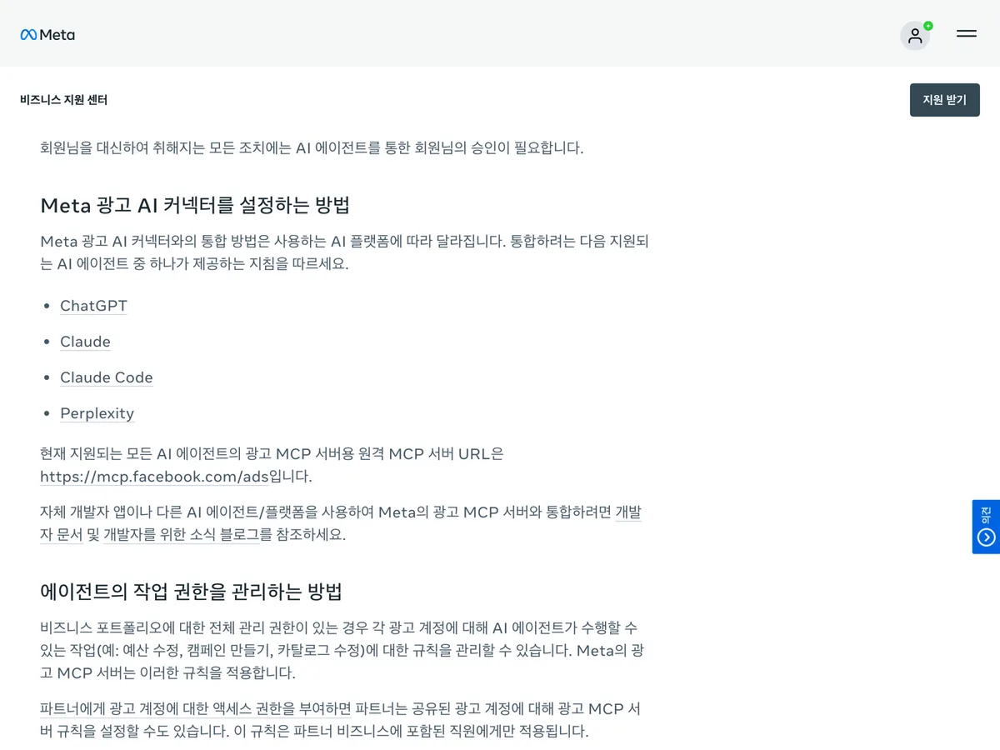
바로 쓰는 요청문
① 내보낸 보고서 읽기
첨부한 CSV는 Meta 광고 관리자에서 내보낸 캠페인 보고서야.
각 열이 무슨 뜻인지 한 줄씩 설명하고, 캠페인별로 지출 · 도달 · 클릭 · 결과를 한 표로 정리해 줘.
파일에 없는 숫자는 계산하거나 추측하지 마.② 볼 지표 정하기
나는 {목표: 문의 받기 / 사이트 방문 늘리기} 광고를 보고 있어. 광고 관리자 '열 맞춤 설정'에서 꼭 켜 둘 지표 6개를 골라 줘.
지표마다 무엇을 뜻하는지, 성과 · 참여 · 전환 중 어느 카테고리에 있는지 적어 줘.③ 커넥터 연결 후 — 읽기만 시키기
Meta 광고 커넥터로 지난 7일 캠페인별 성과를 보고서로 보여 줘. 조회만 하고 캠페인 · 예산은 바꾸지 마.
지표가 아직 집계 중일 수 있으면 그 점도 표시해 줘.대안 도구
Google Ads, TikTok Ads Manager(각 플랫폼 광고 성과는 그 플랫폼 도구에서 봐요). 같은 Meta 안에서는 Meta Business Suite.
주의점
알아 두세요
- 보고서를 내보내려면 그 광고 계정의 관리자·광고주·분석자 권한이 있어야 해요.
- 지표는 바로 보이지 않고 조금 늦게 집계돼요. 새 광고는 숫자가 안 보일 수 있어요.
- AI 연결을 쓰면, 비즈니스 포트폴리오 관리자가 Meta Business Suite 설정 → 통합 → 광고 MCP 서버에서 계정별로 허용·차단할 작업을 정할 수 있어요(예: 일정 금액 이상 예산 설정 차단). 메뉴가 안 보이면 아직 기능이 열리지 않은 계정이에요.
- 오픈 베타라 계정에 따라 기능이 아직 안 보일 수 있어요. 광고 MCP 서버의 요금은 공식 발표에 나와 있지 않아요.
- 광고 관리자 자체의 별도 사용료 안내는 공식 도움말에 없어요. 비용은 광고 예산으로 나가요. 보고서 공유 링크는 외부 사람도 볼 수 있으니 만료일을 정해 두세요.
10. 사이트 성과 — GA4
이 업무에 왜 GA4인가
내 사이트에 누가 어디(검색·SNS·광고·이메일)에서 들어와 무엇을 했는지 보는 Google 공식 분석 도구예요. 표준 버전은 무료예요. 콘텐츠와 광고가 실제 방문으로 이어졌는지 확인하는 곳이에요.
처음 쓰는 3단계
- 속성 만들고 태그 설치: 관리 → 만들기 → 계정(처음이면 측정 시작) → 관리 → 만들기 → 속성 → 관리 → 데이터 수집 및 수정 → 데이터 스트림 → 스트림 추가 → 웹 → 스트림 만들기. 'Google 태그'의 태그 안내 보기 → 직접 설치로 사이트에 넣어요. 사이트 빌더(CMS)를 쓰면 'G-'로 시작하는 측정 ID를 Google 애널리틱스 칸에 넣어요.
- 수집 확인: 실시간 보고서에서 방문이 찍히는지 봐요. 수집이 시작되기까지 최대 30분 걸릴 수 있어요.
- 유입 경로 보기: 왼쪽 보고서 → 획득 → 트래픽 획득. 표 위 검색창에
google / organic처럼 넣어 거르거나, 측정기준 옆+로 페이지 경로 및 화면 클래스를 더해 페이지별 유입을 봐요.
Claude·ChatGPT와 같이 쓰는 법 — 결과 붙여 넣기(CSV) 추천
- 마케터에게 추천하는 방법은 CSV 내보내기예요. 보고서 오른쪽 위 이 보고서 공유 → 파일 다운로드 → CSV 다운로드(또는 Google Sheets로 내보내기)로 받아서 Claude·ChatGPT에 올려요. 최대 10만 행까지 내려받아요.
- Google 공식 Google Analytics MCP 서버도 있지만, 내 컴퓨터에 설치해서 돌리는 로컬 방식이고 읽기 전용이에요. Python, Google Cloud 프로젝트, API 사용 설정, 명령줄 인증이 필요해서 개발자 도움 없이는 어려워요. Claude 웹의 주소 입력 방식으로는 바로 못 붙여요.
- Claude 커넥터 목록·ChatGPT 플러그인 목록에서 Google이 만든 GA 공식 연결은 보이지 않았어요.
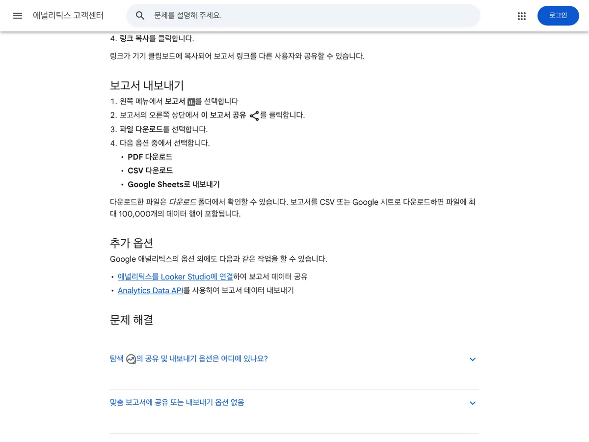
바로 쓰는 요청문
① 유입 경로 요약
첨부한 CSV는 GA4 '트래픽 획득' 보고서야(기간: {기간}).
채널별 세션 · 참여율 · 주요 이벤트를 표로 정리하고, 가장 많이 들어온 채널 3개와 참여율이 가장 낮은 채널 1개를 짚어 줘.
파일에 없는 숫자는 만들지 마.② 콘텐츠별 비교
첨부한 CSV 두 개는 {지난주}와 {이번 주} GA4 페이지별 유입이야.
늘어난 페이지 5개, 줄어든 페이지 5개를 표로 보여 주고, 변화가 큰 페이지에 어떤 콘텐츠를 올렸는지 나한테 물어봐 줘.③ 주간 보고 문장
위 표를 팀에 공유할 주간 보고 5줄로 써 줘. 숫자는 표에 있는 값만 쓰고, 해석과 사실을 구분해서 적어 줘.대안 도구
Microsoft Clarity, Matomo
주의점
알아 두세요
- 데이터 처리에 24~48시간 걸릴 수 있어요. 일부 데이터는 최대 7일 늦게 들어와서 어제 숫자가 오늘 바뀔 수 있어요.
- 이메일·전화번호 같은 개인 식별 정보를 GA4로 보내면 안 돼요. 주소 뒤 파라미터에 실리지 않게 주의하세요.
- 공유·내보내기는 속성의 뷰어 역할 이상이면 돼요.
- 무료(표준 속성)는 탐색 분석 데이터 보관이 최대 14개월이에요. 1년 전과 비교하려면 미리 14개월로 바꿔 두세요.
11. 반복 업무 — Make
이 업무에 왜 Make인가
"시트에 새 행이 생기면 슬랙으로 알림"처럼 앱과 앱 사이 반복 작업을 노코드 화면(시나리오)으로 이어 자동으로 돌리는 도구예요. 3,500개 넘는 앱을 연결할 수 있어요.
처음 쓰는 3단계 — Make 공식 예시(시트 새 행 → 슬랙 알림)
- 시나리오 만들기: 로그인 → 오른쪽 위 + Create a new scenario → 이름 바꾸고 Save → 가운데 큰 + → Google Sheets 검색 → Watch New Rows → Google Sheets 연결.
- 한 번 돌려 보기: 다음 모듈(Slack 등)을 추가하고, Google Sheets 모듈 우클릭 → Choose where to start → All → Save → Run once. 모듈 위 숫자 말풍선을 눌러 들어오고 나간 데이터를 확인해요.
- 예약하고 켜기: 툴바 Every 15 minutes → 주기 설정 → Save → Activate scenario. 테스트용이면 끝나고 꺼 두세요.
Claude·ChatGPT와 같이 쓰는 법 — 직접 연결(공식 커넥터)
- Claude: Make 공식 문서 순서 그대로예요. 왼쪽 Customize → Connectors → Discover → "Make" 검색 → + → 동의 화면에서 Organization과 범위 선택 → Allow. Make가 만든 Anthropic 검증 커넥터예요.
- Claude가 쓸 수 있게 하려면 Make 안에서 시나리오를 켜 두고(활성) 실행 방식을 온디맨드(on-demand)로 두세요.
- 시나리오 실행은 무료 포함 모든 플랜, 시나리오·연결을 보고 고치는 관리 기능은 유료 플랜이에요.
- ChatGPT: Make 문서 기준으로 Settings → Plugins → Developer mode를 켜고 플러그인 추가에서 주소
https://mcp.make.com/openai, 인증 OAuth로 만들어요. Make 도움말은 ChatGPT 공식 Make 플러그인도 있다고 안내하지만, 2026년 10월 23일 플러그인 목록 검색에서는 보이지 않았어요. 플랜 조건은 2절과 같아요.
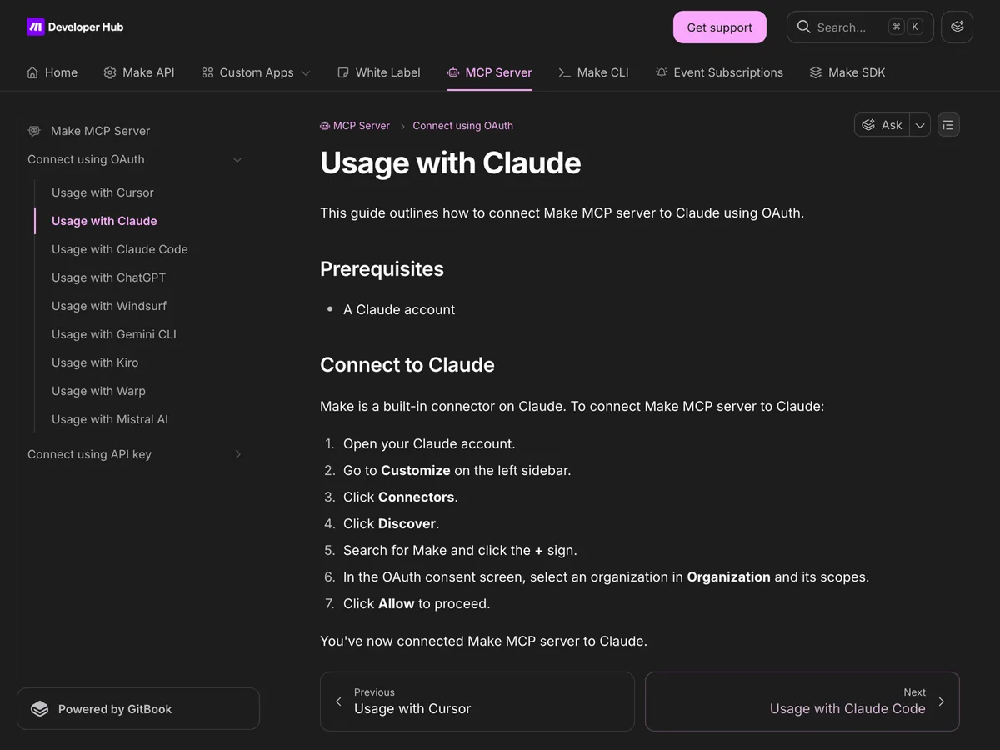
바로 쓰는 요청문
① Claude에서 — 자동화할 일 고르기
내가 매주 반복하는 일을 적을게. 이 중 Make로 자동화하기 쉬운 순서대로 3개 골라 주고, 각각 트리거(언제 시작) · 동작(무엇을 함) · 필요한 앱 연결을 표로 정리해 줘.
{반복 업무 목록 붙여 넣기}② Claude + Make 커넥터 — 시나리오 실행
Make 커넥터로 내가 실행할 수 있는 온디맨드 시나리오 목록을 보여 줘.
그중 "{시나리오 이름}"을 실행하기 전에 필요한 입력값을 먼저 물어보고, 실행 결과를 요약해 줘.③ Claude에서 — 시나리오 설계도
"{Apify로 모은 경쟁 릴스 데이터가 Google Sheets에 쌓이면, 매주 월요일 9시에 상위 10개를 Slack으로 보내기}"를 Make 시나리오로 만들려고 해.
모듈 순서 · 각 모듈 설정값 · 크레딧이 얼마나 들지(주 1회 기준)를 단계별로 알려 줘. 처음 써 보는 사람 기준으로.대안 도구
Zapier, n8n
주의점
알아 두세요
- 연결할 때 주는 실행 범위는 조직 안의 모든 온디맨드·활성 시나리오에 AI 접근을 줘요. 관리 범위를 주면 AI가 시나리오·연결을 수정·삭제할 수도 있어서, 처음엔 실행 범위만 주는 게 안전해요.
- 대부분의 동작 1회 = 1크레딧이에요. 무료는 월 1,000크레딧이고, 크레딧이 떨어지면 시나리오가 멈춰요. 5분마다 돌리면 트리거만 하루 288크레딧이 들어요.
- 무료는 실행 간격이 최소 15분이에요. 남은 크레딧은 기간이 끝나면 사라져요.
- 유료(Core)는 월 약 1.4만 원(연 결제 시 월 약 1.2만 원, 월 1만 크레딧 기준)이에요.
※ 공식 가격은 달러 결제, 환율·세금에 따라 달라요(2026-10-23 기준).
12. 처음이면 이 3개부터
9개를 한 번에 깔면 어느 것도 손에 안 익어요. 내 일에 맞는 경로 하나만 골라 일주일 써 보세요. 두 경로 모두 무료로 시작할 수 있어요.
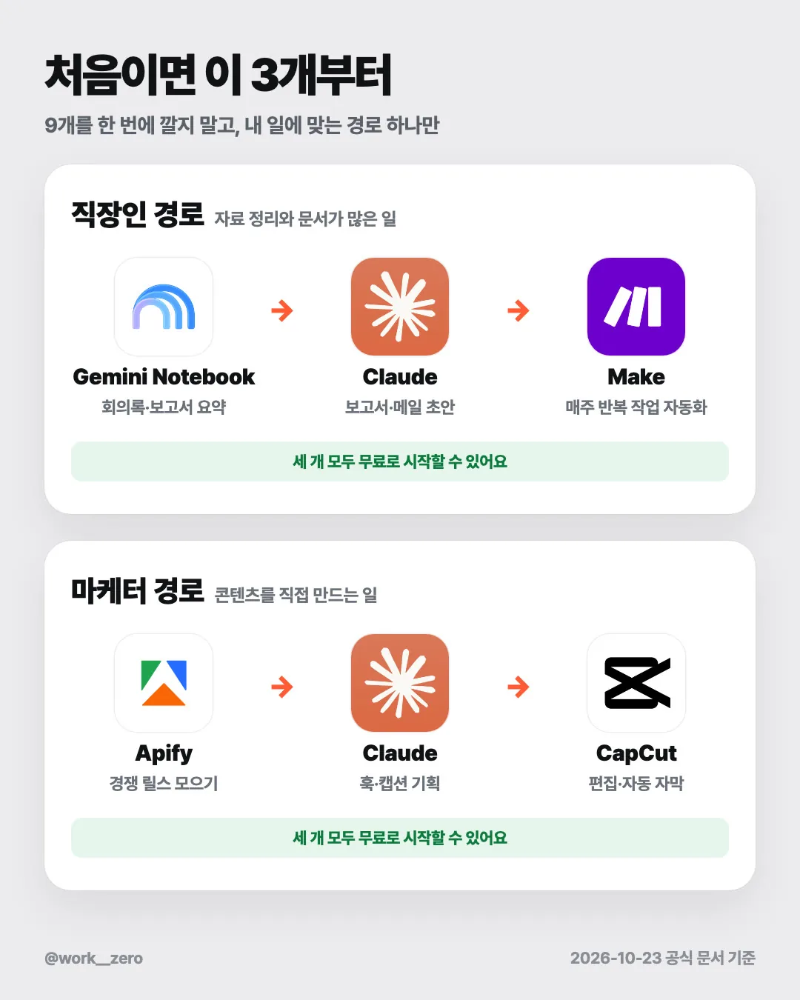
직장인 경로 — 자료 정리와 문서가 많은 일
- Gemini Notebook: 회의록·보고서를 넣고 출처 달린 요약을 받아요(4절).
- Claude: 그 요약을 붙여 넣고 보고서·메일 초안을 받아요(5절).
- Make: 매주 같은 순서로 하는 일을 시나리오 하나로 자동화해요(11절).
마케터 경로 — 콘텐츠를 직접 만드는 일
- Apify: 참고할 계정의 반응 좋은 릴스를 표로 모아요(3절).
- Claude: 그 표로 훅·캡션을 기획해요(5절).
- CapCut: 편집하고 자동 자막을 입혀요. 음악은 8절 주의점을 꼭 보세요.
13. 9개를 이어 쓰는 한 주 흐름 예시
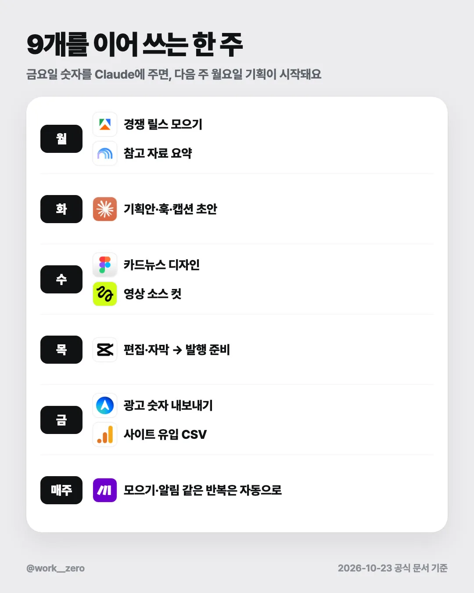
| 요일 | 하는 일 | 도구 | Claude로 넘기는 것 |
|---|---|---|---|
| 월 | 다른 계정 릴스 모으기, 참고 자료 요약 | Apify, Gemini Notebook | CSV, 출처 달린 요약 |
| 화 | 기획안·훅·캡션 초안 | Claude | — |
| 수 | 카드뉴스 디자인, 영상 소스 컷 | Figma, Higgsfield | 카드뉴스 문구, 영상 프롬프트 |
| 목 | 편집·자막, 발행 준비 | CapCut | 대본, 자막 교정 |
| 금 | 광고 숫자·사이트 유입 내보내기 | Meta 광고 관리자, GA4 | 보고서 CSV |
| 매주 | 모으기·알림 같은 반복 | Make | 자동화할 일 목록 |
금요일에 한 번에 시키는 요청문
이번 주 정리를 도와줘. 첨부 파일은 세 개야.
1) Meta 광고 관리자에서 내보낸 캠페인 보고서 CSV
2) GA4 트래픽 획득 보고서 CSV
3) 이번 주에 올린 콘텐츠 목록(날짜 · 제목)
- 콘텐츠를 올린 날과 사이트 유입이 늘어난 날이 겹치는지 표로 보여 줘.
- 파일에 있는 숫자만 쓰고, 원인은 "추정"이라고 표시해 줘.
- 마지막에 다음 주 월요일에 Apify로 더 살펴볼 주제 3개를 제안해 줘.14. 자주 묻는 질문
전부 돈이 드나요? 9개 모두 무료로 가입하거나 시작할 수 있어요. 다만 Higgsfield는 무료로 만든 결과물에 워터마크가 붙고 상업적 이용이 안 돼서, 실무에는 유료 구독이 필요해요. Higgsfield를 Claude·ChatGPT에 연결하는 것도 유료 구독이 있어야 돼요. Meta 광고 관리자는 도구 사용료 안내가 없고, 비용은 광고 예산으로 나가요. Claude 무료 플랜으로 연결 다 되나요? 커넥터 목록에 있는 Apify·Figma·Make는 무료로도 추가할 수 있어요. 주소를 직접 넣는 Higgsfield·Meta 광고 관리자는 무료 플랜에서 둘 중 1개만 돼요. 둘 다 쓰려면 Pro 이상이 필요해요. ChatGPT Plus에서도 되나요? OpenAI 공식 문서 기준으로 주소를 직접 넣는 연결의 전체 기능은 Business·Enterprise/Edu, Pro는 읽기·조회만이에요. Plus·Free는 공식 문서에서 확인되지 않았어요. ChatGPT 안에 공식 앱이 있는 Figma(FigJam·Slides)는 따로 연결돼요. AI가 내 광고 예산이나 시나리오를 마음대로 바꾸면 어떡하죠? Meta 광고 AI 커넥터는 대신 하는 모든 작업에 내 승인이 필요하고, Business Suite 설정에서 막을 작업을 정할 수 있어요. Make는 처음엔 실행 범위만 주고 관리 범위는 주지 마세요. 요청문에 "조회만 하고 바꾸지 마"라고 같이 적는 것도 좋아요. 고객 데이터를 올려도 되나요? 개인 계정에는 올리지 않는 게 안전해요. Gemini Notebook은 피드백을 보내면 사람이 볼 수 있고, Claude는 개인정보 설정의 Model Improvement를 확인하세요. GA4에는 개인 식별 정보를 보내면 안 돼요. 연결이 안 돼요. ① 2절의 경로(Customize → Connectors)가 맞는지, ② Team·Enterprise라면 관리자가 먼저 추가했는지, ③ 연결 주소를 공식 문서에서 그대로 복사했는지 확인하세요. Meta 광고 AI 커넥터는 오픈 베타라 계정에 따라 아직 안 열렸을 수 있어요. 그래도 안 되면 그 도구에서 CSV로 내보내 붙여 넣는 방법으로 같은 일을 할 수 있어요. NotebookLM을 찾을 수 없어요. 2026년 7월 16일 이름이 Gemini Notebook으로 바뀌었어요. 앱스토어와 화면에서 Gemini Notebook으로 찾으세요.
15. 공식 링크
연결 안내
- Claude 커넥터 사용법:
https://support.claude.com/en/articles/11176164-use-connectors-to-extend-claude-s-capabilities - Claude 사용자 지정 커넥터:
https://support.claude.com/en/articles/11175166-get-started-with-custom-connectors-using-remote-mcp - ChatGPT 사용자 지정 MCP 서버:
https://help.openai.com/en/articles/12584461-connecting-custom-mcp-servers-in-chatgpt
도구별
- Apify MCP 서버:
https://docs.apify.com/platform/integrations/mcp - Apify 가격:
https://apify.com/pricing - Apify Instagram Reel Scraper:
https://apify.com/apify/instagram-reel-scraper - Gemini Notebook 이름 변경 발표:
https://blog.google/innovation-and-ai/products/gemini-notebook/notebooklm-gemini-notebook/ - Gemini Notebook 시작하기:
https://support.google.com/notebooklm/answer/16164461 - Gemini Notebook 플랜별 한도:
https://support.google.com/notebooklm/answer/16213268 - Claude 가격:
https://claude.com/pricing - Figma 커넥터(Claude):
https://claude.com/connectors/figma - Figma 가격:
https://www.figma.com/pricing/ - Figma 앱(ChatGPT):
https://help.figma.com/hc/en-us/articles/35326636109975 - Higgsfield 연결 안내:
https://higgsfield.ai/creator-hub/help-center/integrations/how-do-i-connect-higgsfield-to-ai-agent - Higgsfield 가격:
https://higgsfield.ai/pricing - CapCut 소재 라이선스:
https://www.capcut.com/clause/material-license-agreement - CapCut 가격:
https://www.capcut.com/pricing - CapCut 자동 자막:
https://www.capcut.com/tools/auto-caption-generator - Meta 광고 AI 커넥터:
https://www.facebook.com/business/help/1456422242197840 - Meta 열 맞춤 설정:
https://www.facebook.com/business/help/1452248935049010 - Meta 광고 보고서 내보내기:
https://www.facebook.com/business/help/276601619787641 - GA4 보고서 내보내기:
https://support.google.com/analytics/answer/9317657?hl=ko - GA4 트래픽 획득:
https://support.google.com/analytics/answer/12923437?hl=ko - Google Analytics MCP 서버:
https://developers.google.com/analytics/devguides/MCP - Make와 Claude 연결:
https://developers.make.com/mcp-server/connect-using-oauth/usage-with-claude - Make 가격:
https://www.make.com/pricing - Make 첫 시나리오:
https://help.make.com/create-your-first-scenario
연결 주소(복사용)
- Apify
https://mcp.apify.com - Figma
https://mcp.figma.com/mcp - Higgsfield
https://mcp.higgsfield.ai/mcp - Meta 광고
https://mcp.facebook.com/ads - Make(ChatGPT용)
https://mcp.make.com/openai
원화 환산 기준 달러 가격은 2026년 10월 23일 확인 시점의 최신 고시값인 2026년 10월 22일 원/미국달러 매매기준율 1,325.5원(한국은행 경제통계시스템 ECOS, 731Y001 주요국 통화의 대원화환율)으로 환산하고 반올림했어요. 실제 결제 금액은 카드사 환율·부가세에 따라 달라요. 출처: https://ecos.bok.or.kr 2026년 10월 23일 공식 문서 기준으로 확인했어요. 기능·가격은 자주 바뀌니 쓰기 전에 위 링크에서 한 번 더 확인하세요. · @work__zero